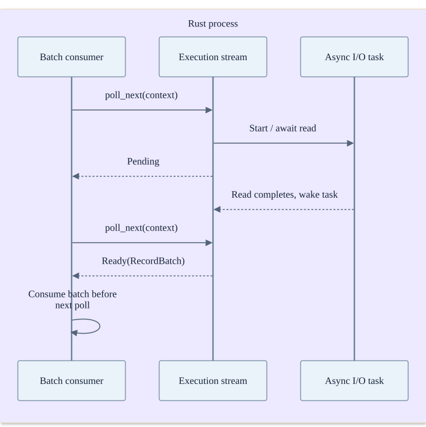

Chapter 13 · source-backed walkthrough
DataFusion: plans, async batches and memory
DataFusion is a Rust query engine library. A host builds logical and physical plans and executes partitions as asynchronous Arrow RecordBatch streams. Local parallelism and streaming batches do not themselves provide a distributed scheduler, durable checkpoints or Kafka exactly-once processing.
01
Embedding the engine in a process
SessionContext and session state hold catalogs, functions, configuration and planning services. SQL becomes a logical plan, optimization rewrites it, and physical planning creates ExecutionPlan operators. Each plan exposes partitioning / ordering properties and executes a selected output partition.
ExecutionPlan::execute(partition, Arc<TaskContext>) returns a SendableRecordBatchStream. The caller polls the stream to obtain batches. execute_stream can combine output partitions; collect materializes all result batches and thus has a different memory profile.
DataFusion operators can use asynchronous tasks and local channels. RepartitionExec is an in-process batch redistribution operator in the inspected source. It is not a network shuffle service or a promise of distributed recovery. A distributed host must add transport, scheduling, membership and retry rules.
One host process using DataFusion
Object-store calls are external I/O. Most operator-to-operator movement is local batch / stream execution.

02
Pull execution, local parallelism and memory pressure
Streaming means batches can be consumed incrementally. A filter / projection can often yield early. A full sort or the build phase of a hash join must retain or spill input before producing the corresponding output. The physical operator determines whether a query is blocking; the word stream does not make every operator low latency.
RepartitionExec creates channels and spawns input tasks to distribute batches by partitioning. In this checkout it can use spill channels; boundedness and ordering affect batching and routing. Channel state, buffer reservations and pending work all consume memory.
MemoryReservation.try_grow asks a shared MemoryPool before growing tracked operator state. Refusal requires that operator to spill, free memory or return an error. Not every operator supports spill, and not every allocation is automatically accounted by this pool. The host still needs admission control and a container memory budget.
A memory request chooses the next execution path
Spill is an operator capability. It avoids some OOM conditions at the cost of I/O and longer latency.

Async stream progress
Pending means the caller should wait for a wakeup, not spin. Actual tasks and executors are managed by the host runtime.

03
Iceberg adapter and distributed host responsibilities
The separate datafusion-iceberg checkout supplies IcebergTableProvider. Its catalog-backed scan reloads table metadata and creates an IcebergTableScan with projection, filters and limit. Its filter pushdown reports Inexact in the inspected path, which means the planner must preserve residual evaluation where required.
The static provider pins table metadata and is read-only in this code. The catalog-backed provider has append insertion support; IcebergCommitExec gathers written file metadata and commits a fast append. These are adapter behaviors, not universal guarantees of every DataFusion installation.
A distributed application embedding DataFusion must choose how plans are serialized, which worker owns each partition, how shuffle travels between workers, whether intermediate data survives worker loss, and how output attempts are committed. The conceptual design below lists required roles rather than claiming an implemented DataFusion RPC stack.
Conceptual distributed host around DataFusion
Dashed control links are responsibilities a host must implement. This diagram is a design decomposition, not a claim that DataFusion core includes these services.

| Failure / cost | Core behavior or requirement | Design consequence |
|---|---|---|
| Async I/O error | Propagates as stream Result error unless a lower layer retries | Host chooses query retry; pin input snapshot for deterministic replay. |
| Worker process crash | In-process state and channels disappear | Distributed host must reconstruct or replay work. |
| Memory budget refusal | Operator spills or fails according to its implementation | Parallelism and batch size need a shared memory budget. |
| Collect all output | Buffers results in memory | Use incremental consumption when output size is large. |
| Catalog-backed Iceberg scan | Reloads metadata per scan planning path | Fresher snapshot discovery but another remote metadata dependency. |
Inside the implementation
These excerpts come directly from the code paths used above. Expand a component to move from the system view into its implementation.
df-execute execution_plan.rs:402
Execution returns one partition as an asynchronous RecordBatch stream.
datafusion/datafusion/physical-plan/src/execution_plan.rs · 4a5d58006e62
401 /// # }
402 /// # fn execute(
403 /// # &self,
404 /// # _partition: usize,
405 /// # _context: Arc<TaskContext>,
406 /// # ) -> Result<SendableRecordBatchStream> {
407 /// # unimplemented!()
408 /// # }
409 /// fn replace_children(
410 /// self: Arc<Self>,
411 /// mut children: Vec<Arc<dyn ExecutionPlan>>,
412 /// _options: ReplaceChildrenOptions,
413 /// ) -> Result<Arc<dyn ExecutionPlan>> {
414 /// Ok(Arc::new(MyExec {
415 /// input: children.swap_remove(0),df-stream mod.rs:1703
DataFrame builds a physical plan and returns a streaming result.
datafusion/datafusion/core/src/dataframe/mod.rs · 4a5d58006e62
1702 /// any allocated resources
1703 pub async fn execute_stream(self) -> Result<SendableRecordBatchStream> {
1704 let task_ctx = Arc::new(self.task_ctx());
1705 let plan = self.create_physical_plan().await?;
1706 execute_stream(plan, task_ctx)
1707 }
1708
1709 /// Executes this DataFrame and collects all results into a vector of vector of RecordBatch
1710 /// maintaining the input partitioning.
1711 ///
1712 /// # Example
1713 /// ```
1714 /// # use datafusion::prelude::*;
1715 /// # use datafusion::error::Result;
1716 /// # #[tokio::main]df-memory mod.rs:478
Tracked operators reserve memory; operator-specific spill or failure follows refusal.
datafusion/datafusion/execution/src/memory_pool/mod.rs · 4a5d58006e62
477 /// in the pool.
478 pub fn try_grow(&self, capacity: usize) -> Result<()> {
479 self.registration.pool.try_grow(self, capacity)?;
480 self.size.fetch_add(capacity, atomic::Ordering::Relaxed);
481 Ok(())
482 }
483
484 /// Splits off `capacity` bytes from this [`MemoryReservation`]
485 /// into a new [`MemoryReservation`] with the same
486 /// [`MemoryConsumer`].
487 ///
488 /// This can be useful to free part of this reservation with RAAI
489 /// style dropping
490 ///
491 /// # Panicsdf-repartition mod.rs:613
Repartition spawns input tasks and routes batches through in-process channels.
datafusion/datafusion/physical-plan/src/repartition/mod.rs · 4a5d58006e62
612
613 let input_task = SpawnedTask::spawn(RepartitionExec::pull_from_input(
614 stream,
615 txs,
616 partitioning.clone(),
617 range_router.clone(),
618 metrics,
619 // preserve_order depends on partition index to start from 0
620 if preserve_order { 0 } else { i },
621 num_input_partitions,
622 ));
623
624 // In a separate task, wait for each input to be done
625 // (and pass along any errors, including panic!s)
626 let wait_for_task =df-iceberg mod.rs:121
Catalog-backed adapter exposes Iceberg scanning and insert planning to DataFusion.
datafusion-iceberg/crates/datafusion/src/table/mod.rs · b12e9871dd2b
120 #[async_trait]
121 impl TableProvider for IcebergTableProvider {
122 fn schema(&self) -> ArrowSchemaRef {
123 self.schema.clone()
124 }
125
126 fn table_type(&self) -> TableType {
127 TableType::Base
128 }
129
130 async fn scan(
131 &self,
132 _state: &dyn Session,
133 projection: Option<&Vec<usize>>,
134 filters: &[Expr],df-iceberg-commit commit.rs:262
The adapter collects written file metadata and commits an Iceberg append transaction.
datafusion-iceberg/crates/datafusion/src/physical_plan/commit.rs · b12e9871dd2b
261 // Create a transaction and commit the data files
262 let tx = Transaction::new(&table);
263 let action = tx.fast_append().add_data_files(data_files);
264
265 // Apply the action and commit the transaction
266 let _updated_table = action
267 .apply(tx)
268 .map_err(to_datafusion_error)?
269 .commit(catalog.as_ref())
270 .await
271 .map_err(to_datafusion_error)?;
272
273 Self::make_count_batch(total_record_count)
274 })
275 .boxed();